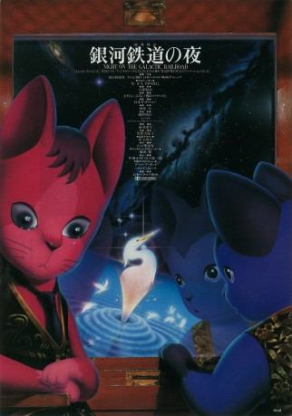

#9188 Night on the Galactic Railroad
 
 IMDB-Wertung: 7.2 / 10
IMDB-Wertung: 7.2 / 10  Metascore: 0
Metascore: 0 
Der junge Giovanni lebt allein mit seiner Mutter. Als diese krank wird und er sich um sie kümmern muss, hat er keine Zeit mehr für anderes und wird zum Außenseiter in seiner Klasse. Einzig sein Sandkastenfreund Campanella hält noch zu ihm. Am Abend des Milchstraßenfests finden sich die beiden Jungen plötzlich an Bord der Galaktischen Eisenbahn wieder und eine phantastische Reise durch den Nachthimmel beginnt. Die Freunde sehen erstaunliche Dinge und begegnen faszinierenden Personen – doch sie ahnen nicht, wohin diese Reise wirklich führen wird, und was der wahre Grund dafür ist, dass ausgerechnet sie beide mit an Bord sind ...
Jahr: 1985
Dauer: 107 Minuten
FSK: 12
Land: Japan Studio: AV Visionen FilmverleihTonspuren:
Untertitel: Deutsch,
Auflösung: 1080p (1920x1080) Größe: 12390 MB
Genre: Drama, Abenteuer, Fantasy, Animation/Trick, Mystery
Regisseur: Gisaburô Sugii, Arlen Tarlofsky
Drehbuch: Susan Isaacs
Soundtrack: Haruomi Hosono
Darsteller:
 Mayumi Tanaka als Giovanni
Mayumi Tanaka als Giovanni Takeshi Aono als Wireless operator
Takeshi Aono als Wireless operator- Gorô Naya als Dr. Bulganillo, Campanella's Father
 Amy Birnbaum als Tadashi
Amy Birnbaum als Tadashi- Scott Cargle als Conductor
 Crispin Freeman als Campanella
Crispin Freeman als Campanella Rachael Lillis als Dairy Woman / Marceau
Rachael Lillis als Dairy Woman / Marceau- Eric Moo als Wireless Operator
 Lisa Ortiz als Kaoru
Lisa Ortiz als Kaoru Sam Riegel als Young Man
Sam Riegel als Young Man Eric Stuart als Lighthouse Keeper
Eric Stuart als Lighthouse Keeper Veronica Taylor als Giovanni
Veronica Taylor als Giovanni- Chika Sakamoto als Campanella
- Junko Hori als Zanelli
- Ayumi Ishijo als
- Kaori Nakahara als Kaoru
- Yoshie Shimamura als Givoanni no haha
- Shun Yashiro als
- Reiko Niimura als Old Woman
 Chikao Ohtsuka als Birdcatcher
Chikao Ohtsuka als Birdcatcher- Hidehiro Kikuchi als Young Man
- Yuriko Fuchizaki als
- Tetsuya Kaji als Train Conductor Shashou
- Seiji Kurasaki als Milkman
- Ryûnosuke Kaneda als Teacher / Scholar
- Fujio Tokita als Lighthouse keeper
- Miyuki Ichijô als Marceau
- Tatsuyuki Jinnai als Campanella's Father
- Scott Rayow als Dairy Man
- Ryûji Saikachi als Store Owner
- Eric Schussler als Father
- Greg Wolfe als Teacher, Scientist
- Oliver Wyman als Zanelli, Bird Catcher
Datei: X:\HD-Anime\Night on the Galactic Railroad (1985, FSK12, 1920x1080).mkv seit 19.07.2018
Festplatte: Gemischt-01+Anime
 Es gibt insgesamt 43 Filme in der Gruppe 'HD-Anime'
Es gibt insgesamt 43 Filme in der Gruppe 'HD-Anime'